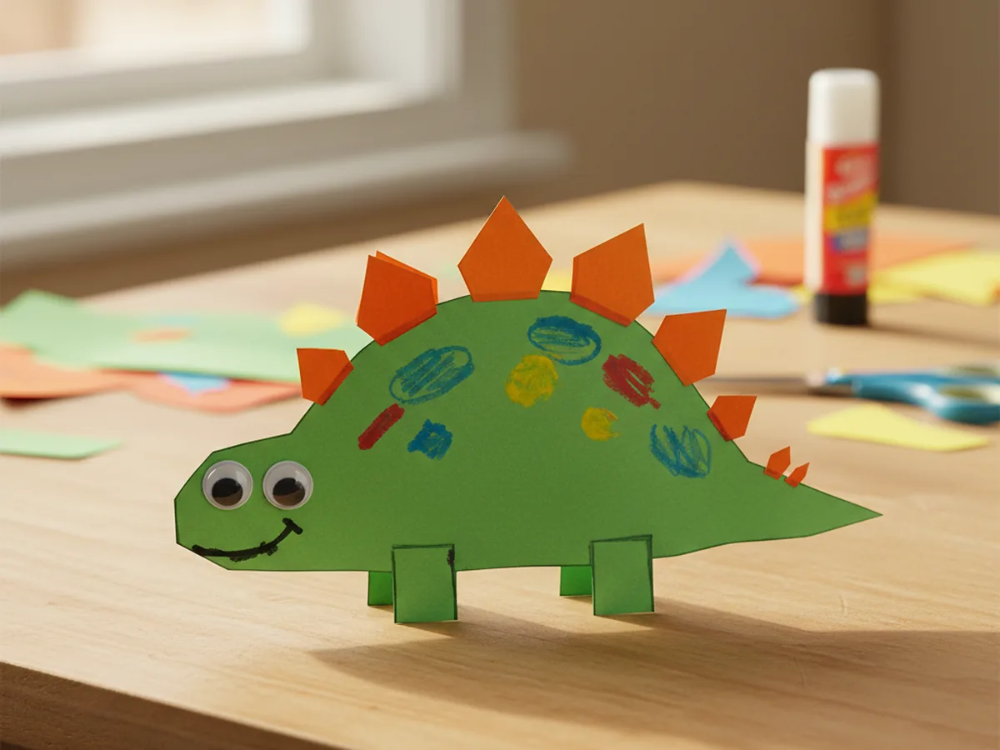
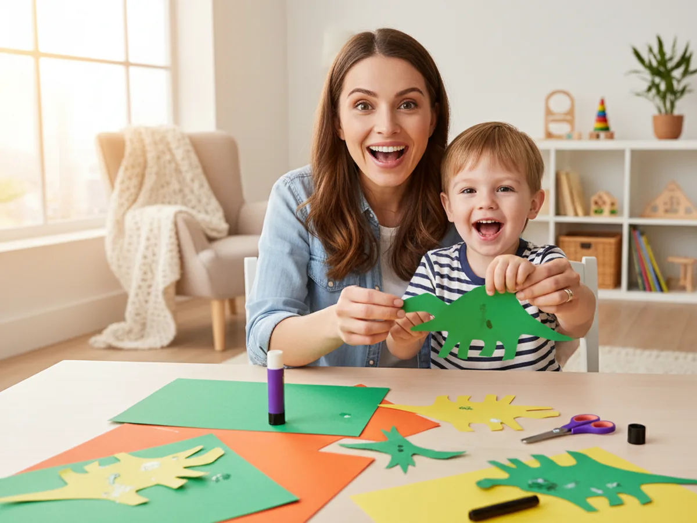
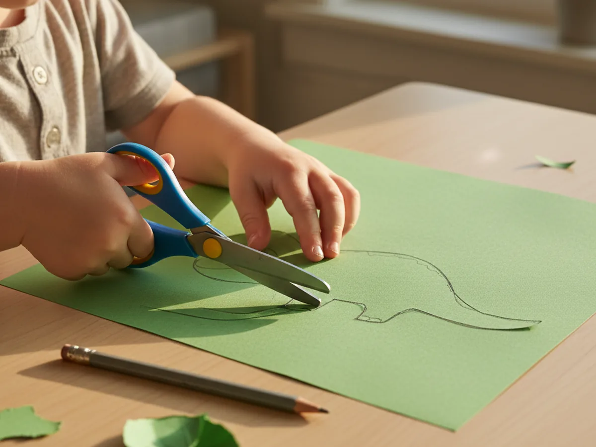
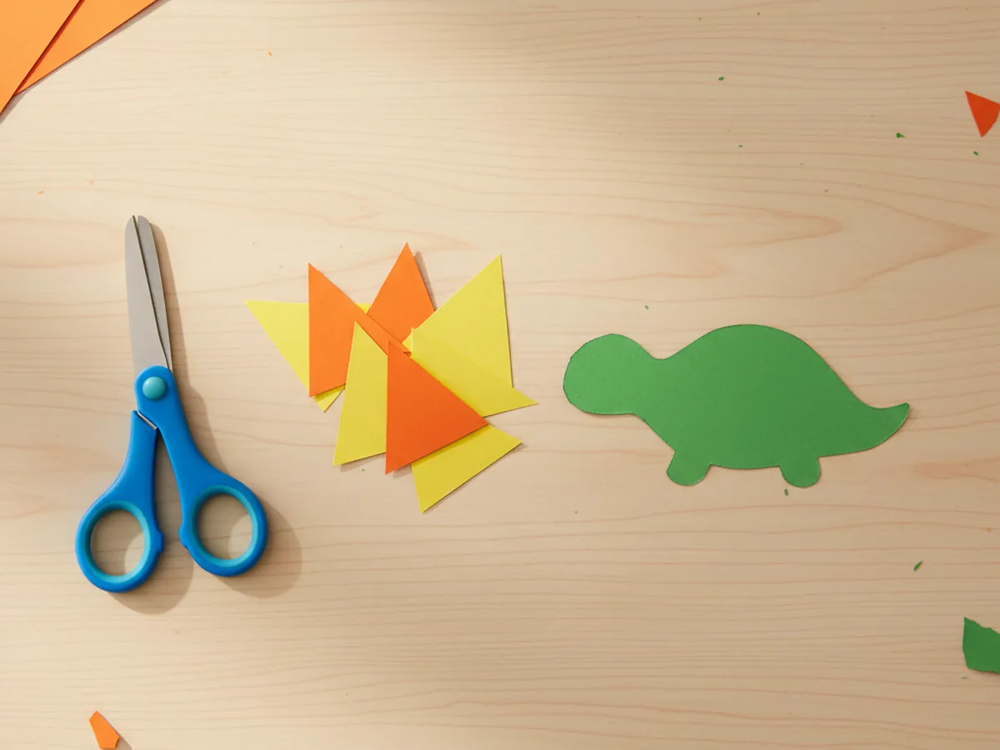
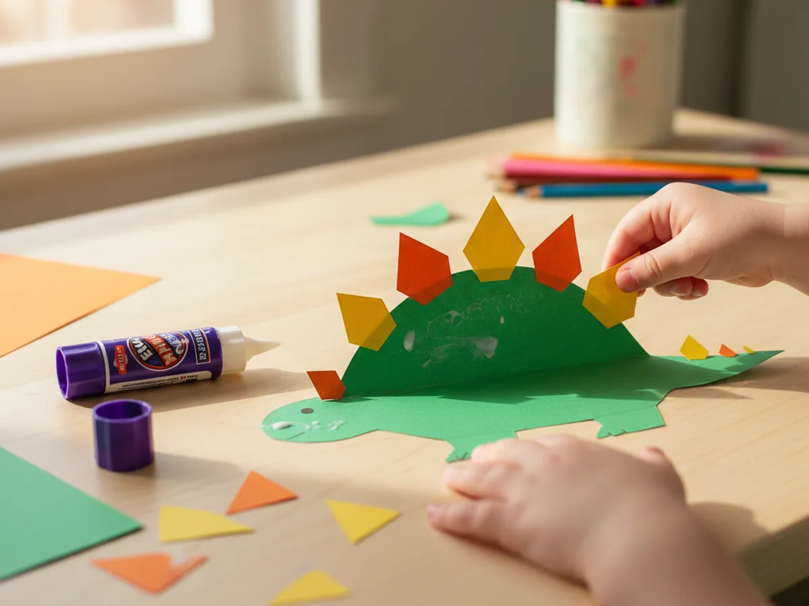
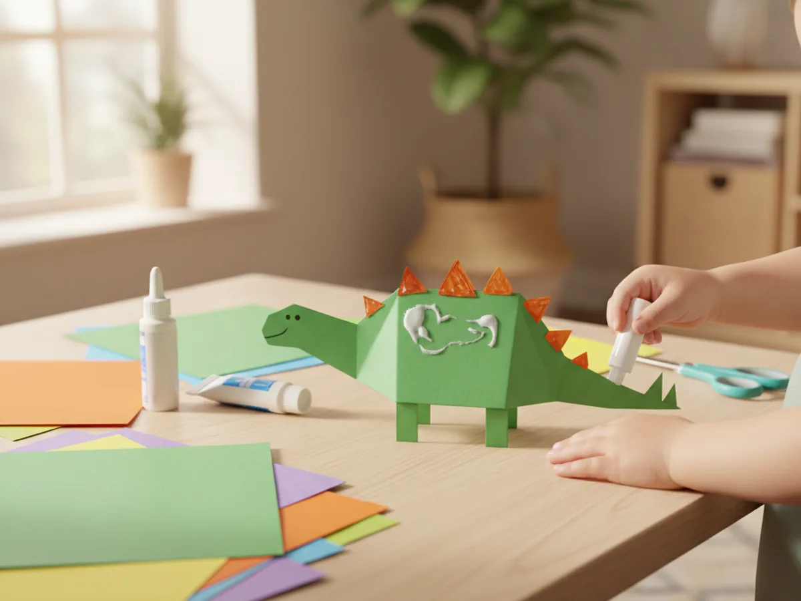
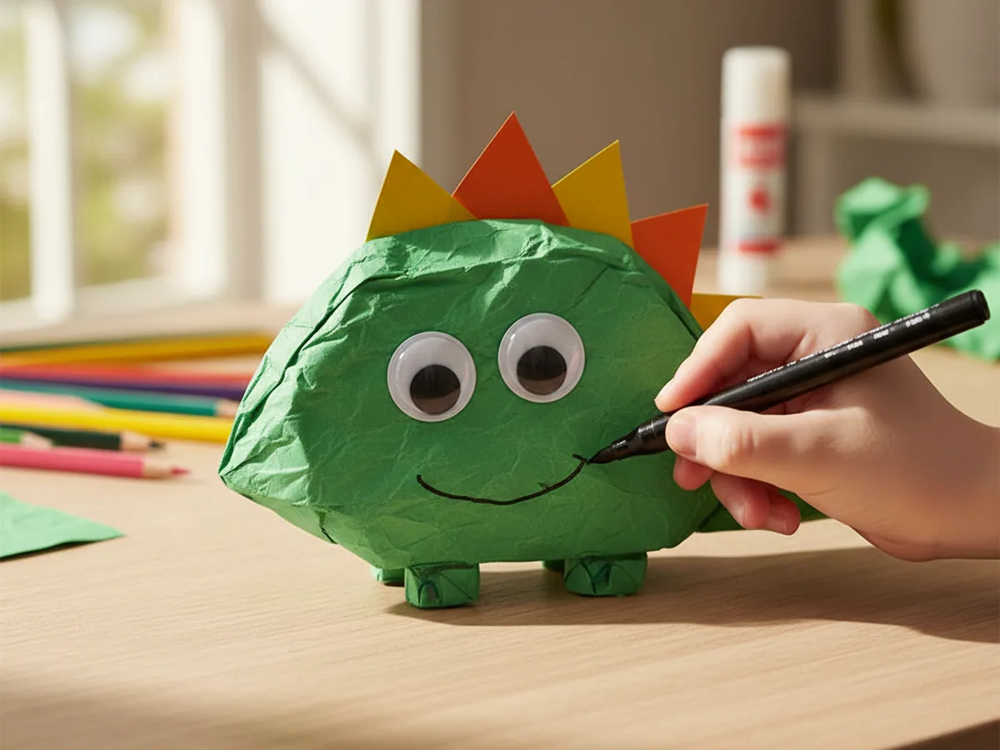
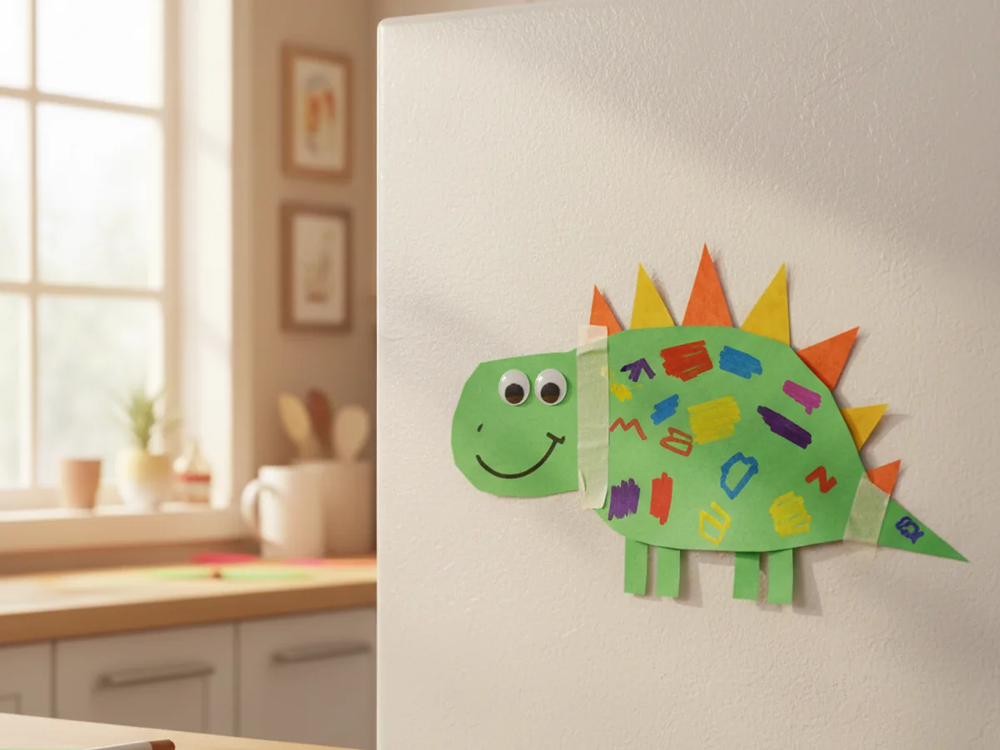

If your kiddo is going through a serious dinosaur phase right now, you are in such good company. This dinosaur paper craft is the perfect afternoon activity for any little dino lover. It is beginner-friendly, low-mess, and uses simple supplies you almost certainly already have in your craft drawer. By the end, your child will be proudly showing off their very own friendly little dino. 🦕
Why Kids Love This Craft
Dinosaurs are basically a universal language for small children, and turning a few pieces of paper into a smiling dino feels like real magic. This easy dinosaur paper craft gives your child a recognizable little character at the end, which is exactly the kind of payoff that makes a young crafter feel like a real artist. They get to choose the colors, the shape of the spikes, and the personality of the face, so every dinosaur ends up unique.
This simple dinosaur paper craft is also a sneaky little fine motor workout. Tracing a body shape, snipping out spikes and legs, gluing pieces in just the right spots, and drawing a friendly face all build small-hand control in the gentlest way. It feels like pure play, but it is also the kind of practice that helps with pencil grip and scissor skills later on.
Best of all, the finished craft has so many lives after the gluing is done. Tape it to the fridge as a roar-worthy welcome each morning. Hang it on a bedroom wall above the toy box. Glue it to a popsicle stick and turn it into a little dino puppet for storytime. A handmade paper dinosaur craft brings smiles long after the markers are put away.

What You'll Need
Here is everything you need to make this dinosaur paper craft with your child. Almost everything on this list is probably already tucked into your craft supplies.
- Crayola construction paper, 12 colors, the green sheets are perfect for the body and orange or yellow for the spikes.
- Astrobrights bright cardstock, an optional sturdier swap if you want a more durable dinosaur to display.
- Crayola classic broad line markers, perfect for drawing the face, dino spots, and tiny details.
- Fiskars blunt-tip kid scissors, sized for ages 4 to 7 and easy on little hands.
- Elmer's washable purple glue sticks, the disappearing color makes it easy for kids to see what they have already glued.
- Self-adhesive googly eyes, optional but adorable for an extra-cute dinosaur face.
- A pencil for tracing and lightly sketching the body shape.
- A simple template or freehand outline if your child wants help drawing the dinosaur.
Step-by-Step Instructions
Follow along with this dinosaur paper craft step by step. Each step is short, friendly, and easy enough for a preschooler to do most of the work with a little help from you.
Step 1: Cut Out the Dinosaur Body
Start by drawing a peanut-shaped or kidney-bean body on a sheet of green construction paper. Aim for around eight inches long and four inches tall, which gives plenty of room for spikes, legs, and a friendly face later. The body should be wider in the middle and narrow gently toward each end so it can become the head and tail.
Help your child cut along the line. The shape does not need to be perfect, a slightly wobbly outline actually makes the finished dinosaur look extra warm and clearly handmade. If your child is brand new to scissors, you can pre-cut the body and let them be the official tracer for this part.

Step 2: Cut Out the Back Spikes
Now for the most fun part of any stegosaurus-style dino, the back spikes! Grab a sheet of orange or yellow construction paper and help your child cut around six small triangle shapes. Each triangle should be about one and a half inches tall with a wide base, like skinny little pizza slices. A mix of orange and yellow looks especially cheerful against a green body.
If your preschooler is comfortable with scissors, let them cut a few spikes themselves while you cut the rest. They do not need to be identical, mismatched spikes look adorable and very kid-made. For toddlers, pre-cut all the spikes so the focus stays on the fun assembly part of this dinosaur paper craft.

Step 3: Glue the Spikes Along the Back
Help your child apply a small dot of glue stick to the wide base of one triangle and stick it along the top curve of the green body, with the pointy tip facing up. Continue across the back, alternating orange and yellow spikes so they pop nicely. Three or four spikes look great if you want a smaller dino, while six gives you that classic stegosaurus look.
Space the spikes evenly, but truly do not stress about perfection here. Even slightly crooked spikes look like a real handmade dinosaur, full of personality. Press each spike firmly so the glue sets, then take a quick moment to admire how much character the back already has.

Step 4: Add the Legs and Tail Tip
Time to give your dino something to stand on! Cut four short rectangle legs from leftover green paper, each about one inch tall and three quarters of an inch wide. Help your child glue them to the underside of the body, two near the front and two near the back. Make them peek out just slightly so it looks like the dinosaur is mid-walk.
For the tail tip, snip a small triangle in a matching green or a fun contrasting color and glue it to the narrower end of the body. If you want a longer tail, you can cut a slim curved strip and glue it underneath instead. This is the moment where the shape really starts looking like a proper dinosaur.

Step 5: Draw the Friendly Face
Time to bring your dinosaur to life. Help your child stick two googly eyes near the front of the body, or draw a pair of round eyes with a black washable marker. Add a small curved smile right below them, the bigger the smile the friendlier your dino will look. A tiny dot for a nostril gives it that finishing touch.
Encourage your child to add their own personality. Sleepy eyes, surprised eyes, or even silly cross-eyes all work beautifully. Every dinosaur has its own mood, and that is part of the charm of this dinosaur paper craft for kids. Let your child name their dino while they finish the face. 💚

Step 6: Decorate and Display
Almost done! Hand your child a few markers in fun colors and let them add little spots, stripes, or zigzags across the dinosaur's body. Some kids love covering their dino in bright dots, others prefer a single line of patterns down the back. Both look wonderful, and there really is no wrong way to finish a cute dinosaur paper craft.
Once the decorating is done, find a happy spot to show off your finished dinosaur. Tape it to the fridge with magnets, pin it to a bulletin board, or stick it on a popsicle stick to turn it into a dino puppet. Step back and watch your kiddo beam at what they made together with you. 🦖

Variations to Try
Mighty T-Rex Version: Skip the back spikes and instead cut two short arms and two larger pointed legs to give your dino that classic T-Rex look. Use red, dark green, or even purple paper for a fierce twist, and draw a wide open mouth with tiny white paper teeth glued inside.
Long-Neck Brontosaurus: Cut a longer, more oval body and attach a curving paper neck and a small round head with a friendly face. This version is a beautiful way to talk about how different dinosaurs ate plants and reached up high into trees, turning the craft into a gentle little nature lesson.
Tissue Paper Dino Mosaic: Skip the marker spots and let your child glue torn pieces of green and yellow tissue paper all over the body for a textured mosaic effect. This version is fantastic for younger toddlers who are still learning to use scissors and adore the gluing part most of all.
Final Thoughts
This dinosaur paper craft is one of those quiet little projects that delivers way more joy than you would expect from a few sheets of paper. It is quick to set up, easy to follow, and the finished dino keeps brightening your home long after the markers are put away. It works just as beautifully on a slow Saturday morning as it does for a preschool class or a birthday party activity.
Try making a few dinos side by side and let each child pick their own colors, spikes, and face. They will compare smiles, name their dinos, and probably ask to make another one tomorrow. Happy crafting, friend!
More Crafts You'll Love
If your kiddo loved this dinosaur paper craft, here are two more friendly animal paper projects they will have a blast making with you: